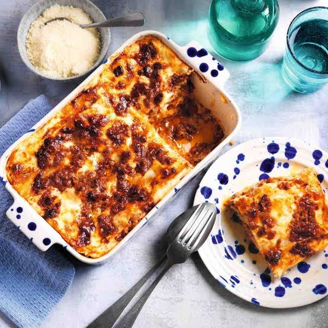

Lasagna recipe:
Here we can find all the ingredients necessary to prepare a simple lasagna at home:
- Ground beef: You’ll need 1 pound of lean ground beef.
- Marinara sauce: Since this recipe starts with a jar of marinara for ease, make sure it’s one that tastes
great. My favorite brand is Rao’s, but choose your personal favorite.
- Cheese: Use two types of cheese – shredded low-moisture mozzarella and whole-milk ricotta.
- Regular lasagna noodles: While classic dry lasagna noodles are typically boiled before they’re layered,
there’s no real reason why you have to cook them ahead of time — they can actually be layered in with the
sauce and cheese as is. And yes, this is ju
These are the steps that will be followed in order to make a simple lasagna at home.
- Brown the beef and onion. Cook, breaking the beef up into small pieces with a wooden spoon, until the beef
is cooked through.
- Prepare the baking dish and assemble the meat sauce. Spread a thin layer of marinara sauce
in the bottom of a 9×13-inch baking dish. Stir the remaining sauce into the ground beef mixture.
- Layer the lasagna. Place 5 lasagna noodles in the baking dish, breaking them if needed to
create a single layer. Dollop and spread 1 cup of the ricotta cheese over the noodles. Dollop and spread
about 1 1/2 cups of the meat sauce on the ricotta, then sprinkle with 1 cup of the mozzarella. Continue
layering the lasagna. Top with a final layer of 5 noodles and the remaining sauce, spreading the sauce thin
so that it almost completely covers the noodles. Cover the dish tightly with aluminum foil.

- Bake the lasagna. Check after 1 hour to make sure the noodles are done by poking the
lasagna with a knife; the knife should slide easily through all the layers.
- Sprinkle with the remaining mozzarella and finish baking. Uncover the lasagna and sprinkle
with the remaining mozzarella. Bake uncovered until the mozzarella is melted and lightly browned, and the
sauce is bubbling.

- Cool the lasagna. Let the lasagna cool on a wire rack for a few minutes before serving.
Home